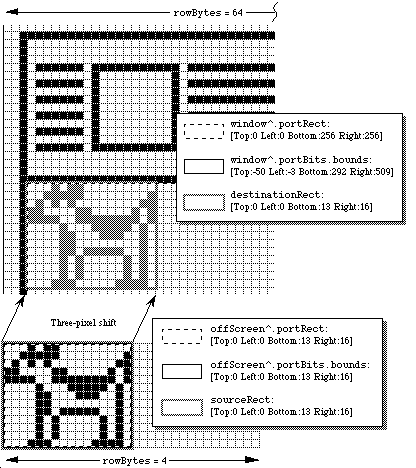
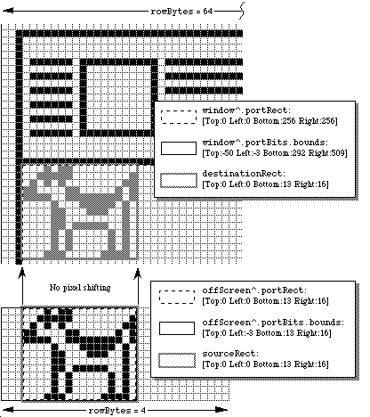

|
|
This Technical Note describes the various factors that can influence the speed
of _CopyBits so that developers can set up conditions to achieve the
best performance for the particular situation.
[Jun 01 1990]
|
Can You Influence the Speed of _CopyBits?
_CopyBits has never been an "easy" QuickDraw routine, like
_LineTo or even _OpenPort. Most programmers who are just
beginning to adjust themselves to the Macintosh usually have to give
_CopyBits a few tries before the right bits copy to the right places.
Even many who feel that they have become Macintosh programmers still see
reflections in their monitors of furrows between their eyebrows as they begin
to press the key labelled "C."
_CopyBits is one of those routines that is so full of subtlety, it has the
beginnings of something that could be considered to be personality. One
subtlety involves the second most important thought that's on the minds of any
computer programmer: execution speed. Why is _CopyBits fast? Why is
it slow? Can I influence its speed? Is there really a clandestine state of
reason? Is there a price to speed?
Back to top Influences on the Speed of _CopyBits
Yes, you can influence the speed of _CopyBits. Yes, it's even
predictable. And yes, it's possible that you have to compromise to get the
maximum speed. This Note is intended to give you a deeper understanding of the
ways that the speed of _CopyBits can be affected; and hopefully you
can then set up conditions for a _CopyBits call without the disturbing
notion that someone else might be doing the same thing just a little bit better
than you.
This Note talks about every factor that affects the speed of _CopyBits
that I can think of and that can be reasonably controlled by a programmer or
the person using an application. There are other factors not mentioned in this
Note because I felt that they were just too esoteric to describe with any
meaning.
In each case, this Note tries to give real-life examples showing the effect of
each factor. These examples are just to give you a relative idea of the
importance of each effect. In real life, the effects of the different factors
give results that could be a lot different from the results presented in this
Note. Each example is based on 100 _CopyBits calls from an off-screen
pixel map to the screen on a Macintosh IIcx with an Apple Extended Video Card
which is running System Software 6.0.5 and 32-Bit QuickDraw 1.2. The
off-screen pixel map is eight bits deep with the standard eight-bit color table
and 256 pixels high by 256 pixels wide. The screen is also in eight-bit color
mode. Calling _CopyBits to copy the entire off-screen pixel map to
the screen 100 times takes 204 ticks, and this Note refers to this figure as
the "standard test." Since a tick on a Macintosh is approximately 1/60 of a
second, the standard test runs at slightly less than 30 frames per second. As
this Note discusses each factor, it presents an example with that factor
changing and all other factors remaining the same as the standard test, which
allows you to compare performance of the changed factor to that of the standard
test of 204 ticks.
What follows is a discussion of each factor that can influence the speed of
_CopyBits, in no particular order.
Back to top Dimensions of the Copied Area
One of the most obvious factors has to do with the dimensions of the copied
area. _CopyBits takes as parameters two rectangles which specify the
portion of the source pixel map from which you want to copy and the portion of
the destination pixel map to which you want to copy it. All other factors
being equal, the larger the rectangles, the more pixels _CopyBits has
to copy and the longer it takes to do the job. To keep _CopyBits as
fast as possible, copy the smallest rectangle possible.
Modifying the standard test so that _CopyBits only copies a 128-pixel
wide by 128-pixel tall area produces a result of 109 ticks, which compares to
the 204 tick performance for a 256-pixel wide by 256-pixel tall area.
QuickDraw is usually faster drawing wide things than it is drawing tall things,
because consecutive pixels in memory are displayed horizontally. Drawing a
series of pixels that are next to each other horizontally is easy because
QuickDraw simply has to set consecutive memory locations, while drawing a
series of pixels that are next to each other vertically is just a little bit
harder because the address of each pixel must be calculated. _CopyBits
is no exception to this general rule; it copies a row of pixels, goes to the
next row, copies that row, goes to the next row, and so on. The time spent
going between rows is a lot more than the time going between pixels on one row,
so the effect is that _CopyBits is faster copying a short and wide
section of a pixel map than it is copying a tall and narrow one. To keep
_CopyBits as fast as possible, copy the shortest rectangle possible.
Modifying the standard test again so that the source and destination rectangles
are 256 pixels wide by 50 pixels tall produces a result of 110 ticks, while
modifying it so that the source and destination rectangles are 50 pixels wide
by 256 pixels tall results in a time of 123 ticks. These 13 ticks may not seem
like a big deal, but combined with other factors, there may be a case where
they make a big difference.
Back to top Shape and Size of the Clip, Visible, and Mask Regions
_CopyBits always makes sure that it stays within the lines, so to speak.
_CopyBits copies pixels clipped to the maskRgn that you pass
as the last parameter to the call. If the destination is the current
GrafPort, _CopyBits additionally clips to a region that's the
intersection of the clipRgn and visRgn of the port. If the
intersection of these three regions is not rectangular, then _CopyBits
has to check each pixel to make sure it falls within the intersection, and this
check slows _CopyBits down. If the intersection of these three
regions is rectangular, then _CopyBits takes the fast case of copying
constant-sized rows. To keep _CopyBits as fast as possible, make sure
the intersection of the clipRgn and visRgn of the destination
GrafPort and the maskRgn is rectangular. Of course, if the
destination GrafPort is a window, then the visRgn is under
the user's control.
In general, if the region that you are copying into has straight vertical edges
for the most part, the time penalty of using a non-rectangular region is not
that bad. Regions that only have small portions that are straight and vertical
are the ones that slow _CopyBits down in a big way. Regions that are
twisted or that have holes or islands can also have a big effect upon the
speed, depending upon how complicated they are. As a rule of thumb, if a
region looks like it slows _CopyBits, it probably does.
Modifying the standard test so the maskRgn is set to a circle that
inscribes the example pixel map results in a time of 303 ticks, which is
considerably longer than the standard test result of 204 ticks that involved
copying a much larger area. Modifying the maskRgn to a square with
226 pixels per side, which has about the same total area of the circle just
used, results in a time of 176 ticks.
Back to top Transfer Modes
Macintoshes without Color QuickDraw have eight transfer modes that work with
_CopyBits, while those Macintoshes with Color QuickDraw get an
additional nine modes. Because the algorithms for each of these modes can be
pretty different from the others, the time it takes _CopyBits to work
with each of these modes can vary radically. For several of these modes, the
speed of _CopyBits can vary a lot depending upon the particular image
being copied and the image over which this image is copied. It can also vary
non-linearly depending upon the depth of the pixel maps. The arithmetic modes
in particular are highly optimized for 32-bit deep pixel maps.
The standard test copies a fairly average-looking ray-traced image to a white
background. Modifying the standard test to erase the background between each
of the 100 calls to _CopyBits produced the following results for the
modes listed (the tests were obviously also changed to reflect the proper mode.
In addition, to make the results a little more meaningful, the time it took to
erase the background has been subtracted from each result.
srcCopy 204 notSrcCopy 469 addOver 1500 adMax 1504
srcOr 436 notSrcOr 444 addPin 1514 adMin 1501
ssrcBic 441 notSrcBic 441 subOver 1493 blend 1553
srcXor 438 notSrcXor 436 subPin 1525 transparent 1107
hilite 3127
Of course, the amount of time taken by some of these modes can be changed by
changing the image to copy and the image over which it is copied. These
figures are just to give an idea of how fast or slow some of these modes are in
this particular situation.
There is actually one more mode which is not mentioned: ditherCopy.
Apple introduced this mode with 32-Bit QuickDraw, and it makes
_CopyBits do error-diffusion dithering when copying a pixel map from
one depth to a pixel map of a lesser depth or to a pixel map of the same depth
with a different color table. The speed of this transfer mode can be very fast
or very slow, depending upon what pixel depths and colors are used and the
particular image being copied. The ditherCopy mode is not included in
the table since the range of figures is potentially very large; play with it
and see for yourself. For more information about this mode, refer to the Color
QuickDraw chapter in Inside Macintosh, Volume VI and the 32-Bit
QuickDraw Developers' Notes.
Back to top Colorization
There is a variation of _CopyBits if the destination pixel map is the
current port and the foreground color is not black or the background color is
not white. If this is the case, then the source image is colorized when it's
copied. For details, see Technical Note #163, Adding Color with _CopyBits.
Because this colorization requires extra processing, _CopyBits slows
down. To keep _CopyBits as fast as possible, make sure the foreground
color is black, the background color is white, and that the current
GDevice pixel map's color table has white in the first position and
black in the last position.
Modifying the standard test so that the foreground color is pure red and the
background color pure blue produces a result of 579 ticks.
Back to top Pixel Alignment
The alignment of pixels in the source pixel map relative to their alignment the
destination pixel map can be surprisingly important to the speed of
_CopyBits, but what is pixel alignment? Following is an example to
demonstrate the concept of pixel alignment. Imagine you want to perform a
_CopyBits on a one-bit-per-pixel off-screen pixel map into a window on
a one-bit-per-pixel screen, and the window is three pixels from the left edge
of the screen.
If you copy the entire off-screen pixel map to the left edge of the window,
then _CopyBits must realign the pixels. Since the leftmost pixels of
the off-screen pixel map are on a byte boundary, but the left edge of the
window is three pixels away from a byte boundary, _CopyBits has to
shift (or realign) each byte from the off-screen pixel map by three pixels
before placing it on the screen. The process of aligning the pixels slows down
_CopyBits.
Figure 1 shows an example of this realignment. An off-screen bit map specified
by a pointer to a BitMap called offScreen is being copied to
a window specified by a WindowPtr called window.
window, which is 256 pixels wide and 256 pixels high, is positioned 50
pixels from the top of the screen and three pixels from the left edge of the
screen. The screen has 512 pixels horizontally and 342 pixels vertically.
The source rectangle that is passed to _CopyBits is sourceRect
and the destination rectangle is destinationRect. Because offScreen
is misaligned by three pixels, _CopyBits has to shift offScreen
by three pixels before placing the image on the screen.

Figure 1. Offscreen Needs Realignment
By adjusting the off-screen pixel map so that its leftmost pixels are also
three pixels away from a byte boundary, _CopyBits can just copy the
bytes without shifting, which is a lot faster. This example holds true on all
Macintosh models, whether they have Color QuickDraw or not. To keep
_CopyBits as fast as possible, make sure the pixels in memory are
aligned with the pixels on the screen. Figure 2 shows the same situation as
Figure 1, except that offScreen is now properly aligned
to window.

Figure 2. Offscreen Aligned
Many, if not most, Color QuickDraw Macintoshes have video cards that can
display one pixel per byte, so one would think that pixel alignment does not
apply in these cases, since all pixels are at byte boundaries. This statement
is true enough, but there is still another kind of alignment that should be
done on these machines. Macintoshes with Color QuickDraw generally have full
32-bit microprocessors, and these microprocessors are at their fastest when
they can transfer long words aligned on long-word boundaries in memory.
Modifying the last example so that the off-screen pixel map and the screen are
both eight-bits-per-pixel, the pixel at the extreme top left corner of the
off-screen pixel map is located at a long-word boundary, because the Macintosh
Memory Manager forces it to be located there; however, the pixel at the extreme
top left corner of the window is located three bytes away from the previous
long-word boundary. No bit shifting is needed, because each pixel takes up a
whole byte, but _CopyBits does have to take the non-optimum case of
copying long words on non-long-word boundaries. This case works fine, but it
is not quite as fast as it could be. To keep _CopyBits as fast as
possible, make sure pixels in the source and destination pixel maps are aligned
on long-word boundaries.
Since 1984, Macintosh programmers have been told that rowBytes must be
even. That is still true, but to allow _CopyBits to copy an entire
pixel map on long-word boundaries, rowBytes must be a multiple of four
so that every line in a pixel map begins on a long-word boundary. The
following formula can be used to find the minimum rowBytes needed for
a pixel map's bounds rectangle with right and left coordinates of
bounds.right and bounds.left, and a pixel depth of
pixelDepth:
Off-screen GWorld support, which was introduced with 32-Bit QuickDraw,
can automatically set up a pixel map so that it's properly aligned to any part
of the destination pixel map or bit map. You can specify that you want this by
passing zero for the pixel depth and passing the rectangle of the destination
area in global coordinates. See the 32-Bit QuickDraw Developers' Notes and
"Braving Offscreen Worlds" in develop, January 1990 for details.
The way that _NewGWorld aligns a GWorld is to set up the
off-screen pixel map so that its rowBytes is four bytes wider than one
would normally calculate. Four bytes is the maximum amount that any pixel map
would have to be realigned at any pixel depth. The bounds rectangle's
left coordinate is set to the negative of the left coordinate of the
destination rectangle in global coordinates modulo (32 / pixel depth), because
this is maximum amount that a pixel map must be shifted to achieve perfect
alignment. To build on the earlier example, assume you have a 128-pixel wide,
eight-bit deep, off-screen pixel map to copy to a window that is three pixels
away from the left edge of an eight-bit color screen.
First, the rowBytes for the off-screen pixel map is set to 131 to
allow room for realignment. To align the off-screen pixel map to the on-screen
window, the left coordinate of the off-screen bit map's bounds is set
to -3 and the right coordinate is still at 128. Notice that the off-screen
pixel map's bounds is now 131 pixels wide. Now, the pixels in the
off-screen pixel map with a horizontal coordinate of 0 are located three bytes
away from the previous long-word boundary. The pixels on the left edge of the
window are also located three bytes away from the previous long-word boundary,
so _CopyBits can copy long words on long-word boundaries.
If a user moves the window so that it's two pixels from the left edge of the
screen, the off-screen pixel map must be realigned. _UpdateGWorld is
used to do this. It changes the left coordinate of the off-screen pixel map's
bounds rectangle to -2 and then it shifts all the pixels in the
off-screen pixel map one pixel to the left. The extra four bytes in each row
provide the room for this shifting. (Gives you some new respect for the
off-screen support, doesn't it?)
This same discussion applies to any pixel depth, though shallower pixel depths
require bit shifting rather than byte shifting. The same principles apply,
though. Notice that in a 32-bit deep pixel map, all pixels are aligned on
long-word boundaries, so no bit shifting or byte shifting ever needs to be done
on one of those. _NewGWorld still adds four to rowBytes even
in this case, however.
Modifying the standard test so that the source and destination pixel maps are
four bits deep with perfect pixel alignment produces a result of 78 ticks;
however, if the destination pixel map is one pixel left of perfect alignment,
the result is 228 ticks.
Back to top Speed of the Hardware, Of Course
Obviously, the speed of the machine your application is running on affects the
speed of _CopyBits. To make _CopyBits as fast as possible,
spend a lot of money. However, there is more to the speed of
_CopyBits than the speed of the Macintosh itself. When the Macintosh
128K was released, there was only one place for pixel images: main memory.
Today, the situation is more complicated. If you have a modular Macintosh, the
pixel image for the screen is in the memory of a NuBus(TM) video card. If you
have a Macintosh IIci, you can optionally abandon the NuBus video card and use
on-board video which takes up part of main memory. If you have an 8*24 GC card
with enough memory, the pixel images can be cached in the card's memory along
with the screen's pixel image.
All of these different locations have different access speeds, and that can
affect the speed of _CopyBits. Additionally, different Macintoshes
have different RAM access speeds. The Macintosh II, IIx, IIcx, and SE/30 have
faster RAM than the Macintosh Plus or SE. The Macintosh IIci RAM access speed
is faster still, and the Macintosh IIfx has faster RAM access than the IIci.
Different video cards have different access speeds. The IIci has a cache card
option which can vastly speed up on-board video RAM access speed. Third-party
video cards that work in the Processor Direct Slot of the Macintosh SE and
SE/30 have their own speed characteristics as well.
There can also be a speed cost for crossing the different areas. If
_CopyBits copies between main memory and a NuBus video card, the image
data has to be transferred across NuBus. NuBus is a speed bottleneck, so
copying an image across NuBus is slower than copying the image from one part of
the screen to another or copying from one part of main memory to another.
Modifying the standard test to create two windows and two off-screen pixel
maps--all eight bits deep with the standard color table then doing every
combination of copying between off-screens, between windows, and between
off-screens and windows produces the following results:
Off-screen to off-screen: 147
Screen to screen: 188
Off-screen to screen: 204
Screen to off-screen: 201
Performing the standard test on a Macintosh IIfx running System Software 6.0.5
with an Apple Extended Video Card yields a result of 153 ticks, which is not
too shabby considering that the transfer is still going through NuBus.
Back to top Depth of Pixel Maps
This factor is pretty obvious and is sort of similar to the effect of the
dimensions of the copied area: the more bits per pixel there are in the pixel
map to copy, the more memory that _CopyBits has to move and the longer
it takes to get the job done, assuming that the source and destination pixel
maps have the same depth. To make _CopyBits as fast as possible, make
sure the pixel maps are as shallow as possible.
If _CopyBits has to copy to a pixel map that has a different depth
from the source pixel map, the relationship between speed and depth becomes
more complicated. There is a tradeoff between the time taken to change the
depth of an image and the absolute amount of data that has to be processed.
Copying from a 1-bit deep pixel map to a 32-bit deep pixel map is not that slow
because the amount of image data in the 1-bit deep pixel map is so small.
Modifying the standard test to transfer a four-bit deep pixel map to another
four-bit deep pixel map produces a result of 78 ticks.
Back to top Color Mapping
Color QuickDraw expects a color table attached to every indexed pixel map.
Color tables specify what color each pixel value in the pixel map represents.
When an application calls _CopyBits to copy a pixel map into another
pixel map, _CopyBits reproduces the colors of the image in the source
pixel map as closely as possible--even if the colors available in the destination
pixel map are different than those available in the source pixel map.
This reproduction is done through a process called "color mapping."
When color mapping is done, the source pixel values are transformed into
RGBColor records using the source pixel map's color table. These
RGBColor records are passed to _Color2Index which finds the
pixel values of the closest available colors in the current GDevice
pixel map's color table. This same process is done when the source and
destination pixel maps have differing depths. The color table attached to the
destination pixel map is not used in color mapping. The colors available in
the current GDevice pixel map's color table are used instead. So, the
destination pixel map must have the same colors for the same pixel values as
the current GDevice. Otherwise, the resulting image in the
destination pixel map gets the wrong colors. See Inside Macintosh,
Volume V-141, The Color Manager, for a description of _Color2Index.
It's also helpful to read the "Inverse Tables" section in the same chapter on
page V-137.
Now, if the source color table contains virtually the same colors for the same
pixel values as the current GDevice pixel map's color table, then any
particular pixel value has the same color regardless of whether it is in the
source or destination pixel map. In this case, color mapping is a waste of
time, because the pixels can be copied directly from the source pixel map to
the destination pixel map without a loss of color fidelity. _CopyBits
takes advantage of this special case to yield some big speed improvements. How
is this special case detected? Before this question is answered, it's useful
to understand how Color QuickDraw uses color tables.
The ctSeed Field
The first field in a color table is the ctSeed field. This LongInt
can be thought of as the color table's version of the scrapCount field of the desk scrap.
Whenever an application calls _ZeroScrap, the desk scrap's scrapCount is changed.
An application can tell that the desk scrap has changed by checking to see if the scrapCount has changed.
Similarly, whenever the contents of a color table are changed in any way, the ctSeed field should be
changed to indicate to anyone using that color table that it has been modified.
Additionally, Color QuickDraw often uses the ctSeed as a fast check
for color table equality. If two color tables have the same ctSeed,
then Color QuickDraw often assumes that their contents are equivalent.
After creating a new color table, an application has to get a valid value for
the ctSeed field, and it can do so with the _GetCTSeed
routine. This routine generates a valid ctSeed value suitable for a
new color table. See Inside Macintosh, Volume V-143, The Color Manager,
for a description of _GetCTSeed.
System Software 7.0 and 32-Bit QuickDraw each offer a routine called
_CTabChanged which should be called after a color table is modified.
It takes a handle to the changed color table as a parameter. If the
_CTabChanged routine is not available, then the application should
instead change ctSeed to a different valid value by calling
_GetCTSeed and assigning the result to ctSeed, just like it's
done when the application creates a new color table. You must use either one
of these methods to tell Color QuickDraw that the color table has changed, or
else the modified color table could be confused with the old color table, or
with some other color table--this is especially critical if an 8*24 GC card is
being used. See the 32-Bit QuickDraw Developers' Notes for details about the
_CTabChanged routine.
The ctFlags Field
The ctFlags field is used as a set of flags that indicate some
characteristics of the color table. Currently, only the top two bits of
ctFlags are of any interest to developers. The most significant bit
of ctFlags (bit 15) indicates whether the color table is a sequential
color table or an indexed color table. Bit 14 indicates that the color table
is a special kind of sequential table if it is set. In these kinds of color
tables, the value fields indicate a palette entry in the destination
window's palette. See the Palette Manager section of the 32-Bit QuickDraw
Developers' Notes for a discussion about this capability.
Sequential Color Tables
If bit 15 of ctFlags is set, the color table is a sequential color
table. Sequential color tables are usually found attached to GDevice
pixel maps and to GWorld pixel maps.
In sequential color tables, the position of each color in the color table
indicates the pixel value to which it corresponds. For example, the fifth
entry in a sequential color table always has a pixel value of four (pixel
values start at zero). The value field of each ColorSpec is
not defined in sequential color tables, though they are used in color tables
for screen GDevice records to indicate that a particular color is
reserved, protected, or both.
Indexed Color Tables
If bit 15 and 14 of ctFlags are clear, the color table is an indexed
color table. In indexed color tables, the value field of each ColorSpec indicates
the pixel value of the RGB in that ColorSpec. For example, if the fifth ColorSpec
in the color table has a value field containing 10, then that color has a pixel
value of 10, not 4, as it would have been if this were a sequential color table.
Color Mapping or Non-Color Mapping
As noted before, _CopyBits can detect whether it has to do color
mapping or not, so that it can take advantage of the speed benefits of no color
mapping if possible. How is this done? First, _CopyBits checks to
see if the ctSeed field of the source and destination color tables are
the same and if the source and destination pixel maps have the same depths. If
both of these conditions are true, then _CopyBits assumes that the two
color tables are identical and it just copies the pixels directly without color
mapping. If the ctSeed fields are different, _CopyBits
checks manually through all of the colors in the source pixel map's color table
map to see if they map to the same pixel values in the current GDevice
pixel map's color table as they do in their own color table. If they do, then
_CopyBits again takes the fast case.
So to keep _CopyBits as fast as possible, make sure that the source
and destination color tables have virtually the same colors for the same pixel
values. This applies even if one color table is an indexed color table and the
other is a sequential color table, or if the source and destination color
tables are both indexed but the order of the ColorSpec records differ.
Modifying the standard test so that the source pixel map has a color table that
is the reverse of the standard eight-bit system color table (the grays have low
pixel values and the light pinks and yellows have high pixel values) and the
destination pixel map has the standard eight-bit system color table produces a
result of 470 ticks.
By the way, color tables do not make any sense for direct pixel maps, so this
discussion does not apply to them. Direct pixel maps do have a color table
attached to them, but they're just there so that an application that assumes
that a color table is attached does not bomb.
Back to top Scaling
If the source and destination rectangles are the same size, _CopyBits
has the fairly easy task of just transferring the pixels from the source pixel map to the
destination pixel map; however, if the source and destination rectangles are different sizes,
_CopyBits has to scale the copied image, which slows it down a lot. To keep _CopyBits
as fast as possible, make sure the source and destination rectangles have the exact same dimensions.
Modifying the standard test to copy a 128 by 128 pixel portion of the source
pixel map to the whole 256 by 256 pixel window produces a result of 1,159 ticks.
Back to top Of Time and Space
Hopefully, this Note makes it a lot clearer to you how to set up a situation in
which your _CopyBits calls are as fast as your situation allows. It's
important to realize that this Note does not cover every single factor that has
an influence on the speed of _CopyBits. There are many more factors
which are just too unpredictable. For example, _CopyBits is highly
optimized for many special cases, and those optimizations can have a big effect
on the speed of the copy. Also, the speed of _CopyBits can be
affected by interrupt-level tasks. It's up to you to fine tune your programs
to your particular situations.
Back to top References
Inside Macintosh, Volume I, QuickDraw
Inside Macintosh, Volume V, The Color Manager
Inside Macintosh, Volume VI, Color QuickDraw
Technical Note M.IM.ColorCopyBits, Adding Color With _CopyBits
develop, January 1990, "Realistic Color for Real-World Applications"
develop, January 1990, "Braving Offscreen GWorlds"
32-Bit QuickDraw Developers' Notes
NuBus is a trademark of Texas Instruments
Back to top Downloadables
|

|
Acrobat version of this Note (520K).
|
Download
|
|